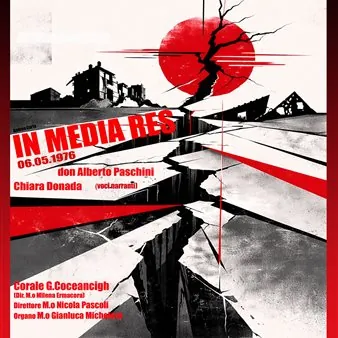

dom 11 ott · dalle 17:30
In Media Res 06.05.1976
Il Flusso del Tempo e la Fragilità delle Certezze Il titolo stesso dell’opera, "In Media Res", racchiude il nucleo filosofico dell'intero testo. Venire al mondo, significa essere gettati in un'azione già iniziata, diventare parte di un flusso ininterrotto di esistenze passate e…
 Indicazioni
Indicazioni
- Costi e prenotazioni
- Costo non indicato · Prenotazione non indicata
- Programma
- Programma da verificare. Apri la fonte ufficiale per orari e possibili aggiornamenti.
- In caso di maltempo
- Nessuna indicazione specifica pubblicata.
- Note
- Acquisito automaticamente dalla fonte.
L’EVENTO
Descrizione completa
Il Flusso del Tempo e la Fragilità delle Certezze
Il titolo stesso dell’opera, "In Media Res" , racchiude il nucleo filosofico dell'intero testo. Venire al mondo, significa essere gettati in un'azione già iniziata, diventare parte di un flusso ininterrotto di esistenze passate e future. L’essere umano vive nell’illusione di controllare il tempo e lo spazio, dominando e talvolta depredando una Terra che crede immobile e fedele. Il testo teatrale scardina questa certezza: la terra non è ferma, ma è una molla che si carica incessantemente nel sottosuolo finché non si spezza. L’opera mette in scena proprio questo istante esatto: la rottura drammatica della "matita", il confine netto tra un "Prima" (fatto di abitudini secolari, tradizioni e gesti quotidiani che sembravano eterni) e un "Dopo" in cui la pietra si liquefa e i ricordi diventano polvere.
La Memoria Privata e la Storia Collettiva
La drammaturgia si articola attorno a una polarità potente, incarnata dai due narratori: Il Narratore 1 rappresenta la voce della Storia, della Terra e della coscienza collettiva. Spiega l'evento attraverso l'oggettività scientifica, antropologica e geologica (lo scontro delle placche tettoniche), elevando la tragedia friulana del 1976 a un livello universale, privo di giudizio morale o punizione divina, ma visto come pura e inevitabile evoluzione meccanica della natura. Il Narratore 2 dà invece corpo e voce alla memoria privata, all'esperienza intima del dolore. È un vecchio piegato dagli anni e dalla nostalgia, che dialoga con il fantasma della moglie perduta nel crollo della rimessa. Attraverso di lui si vive il dramma del singolo: il rimpianto per "l'ultimo millimetro prima" del disastro, l'urgenza di una carezza mancata o di una parola non detta. A fare da collante tra queste due dimensioni vi è il Coro , che rappresenta la comunità. Esso non è un elemento statico, ma un "esercito di anime" – emigranti, lavoratori, antenati – che si muove nello spazio passando dalla coralità ordinata delle tradizioni friulane al caos della scossa, fino alla dolente marcia dell'esodo.
Il Senso del Racconto: Riempire i Vuoti
Perché mettere in scena questa tragedia? Il testo risponde con una dichiarazione di poetica chiarissima: «Noi raccontiamo storie. Perché le storie riempiono i vuoti. Non per fermare il tempo, ma per imparare a nuotarci dentro» . Il senso dello spettacolo non è la semplice rievocazione cronachistica del terremoto del 6 maggio 1976. L'opera si propone di salvare dall'oblio i frammenti di memoria di chi non ha voce, celebrando lo spirito di un popolo che ha saputo rialzarsi da solo ("si cumbine"), ma evidenziando al contempo il trauma psicologico della seconda catastrofe: la crisi sismica di settembre, che distrusse le illusioni di una rapida ricostruzione e impose il doloroso sradicamento dell'esodo.
Una Drammaturgia Sensoriale
Il testo possiede una forte vocazione visiva e sonora, dove la luce e il silenzio sono veri e propri personaggi. Il passaggio dall'immutabile al buio assoluto durante i 59 secondi della scossa (affidati esclusivamente all'audio originale dell'epoca a cui segue l’esecuzione nel buio completo, dello struggente Daur San Pieri di Marco Maiero, a evocare quello che oramai è solo memoria) costringe lo spettatore a sperimentare fisicamente l'angoscia della cecità e del disorientamento. Le successive luci caotiche delle pile e l'oscillazione permanente delle lampade creano la sensazione di un'instabilità non solo geologica, ma esistenziale.
In definitiva, In Media Res è un atto di resistenza poetica. Dedicato a chi ha ricostruito e a chi ha aiutato senza chiedere nulla, il testo teatrale dimostra che finché ci sarà qualcuno a raccontare e qualcuno ad ascoltare, la memoria smetterà di essere un semplice ricordo nostalgico per farsi realtà tangibile, mantenendoci profondamente vivi.
IL PROGRAMMA
Programma e orari
Appuntamenti raccolti dalle fonti elencate. Dove manca un orario, non è ancora disponibile in questa scheda.
Programma pubblicato
- Dal 2026-10-11 al 2026-10-11
INFORMAZIONI UTILI
Prima di partire
- Controllare la fonte prima di partire.
ORGANIZZAZIONE